Nützliche Daten in Arbeitsblattkopfzeilen anzeigen
WksHeaderRow-DataSupportDisplay
Origin-Arbeitsblatt unterstützt Headerzeilen oberhalb des Datenbereichs für Metadaten. Die in diesen Kopfzeilen enthaltenen Metadaten werden dann für Zeichen- und Analyseoperationen verfügbar. Standardmäßig zeigt die Arbeitsmappenvorlage von Origin nur die Zeilenüberschriften Langnamen, Einheiten, Kommentaren und F(x). Anwender können zusätzliche Kopfzeilen während des Imports einschalten, wie Abtastintervall, Sparklines etc.
- 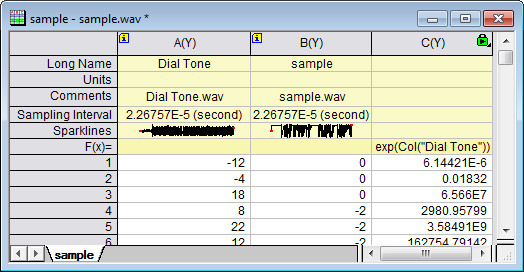
Anwender können auch manuell zusätzliche benutzerdefinierte oder Standardparameterzeilen hinzufügen. Beachten Sie, dass nur Informationen in benutzerdefinierten oder Standardparameterzeilen formatiert werden können, z. B. als numerische Daten mit bestimmten Dezimalstellen gezeigt, als Datum oder Zeit festgelegt etc.
Lesen Sie auch Einfache Hilfsprogramme zum Füllen der Spalten mit Daten.
Spaltenbeschriftungszeilen anzeigen
Standardmäßig zeigt die Origin-Arbeitsblattvorlage vier Spaltenbeschriftungszeilen an -- Langname, Einheiten, Kommentare und F(x)= (Spaltenformel). Diese Spaltenbeschriftungszeilen können hinzugefügt oder verborgen werden, abhängig von dem Wunsch, hilfreiche Informationen in dem Arbeitsblatt anzuzeigen.
Es gibt mehrere Methoden zum Steuern der Beschriftungszeile:
- Mit Hilfe der Minisymbolleiste. Die Minisymbolleiste der Spaltenbeschriftungszeile wurde in den letzten Versionen eingeführt. Die Minisymbolleiste wird durch einen Einzelklick auf den Header einer Spaltenbeschriftungszeile oder mehrere Header aufgerufen. Verbergen und verschieben Sie ausgewählte Zeile(n) nach oben oder unten. Klicken Sie auf die Schaltfläche P, um eine benutzerdefinierte Paramaterzeile hinzuzufügen.
- Verwenden Sie das Kontextmenü. Klicken Sie mit der rechten Maustaste auf den Header eine Spaltenbeschriftungszeile oder mehrere Zeilenheader, um sie zu zeigen/verbergen, als Langname bzw. Einheit zu setzen oder benutzerdefinierte Parameter hinzuzufügen etc.
- 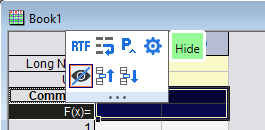
- Verwenden Sie den Dialog Spaltenbeschriftungszeilen. Klicken Sie mit der rechten Maustaste auf den Header einer Spaltenbeschriftungszeile und wählen Sie im Kontextmenü Spaltenbeschriftungszeilen bearbeiten.... Blenden Sie Headerzeilen ein oder aus, ziehen Sie an den Beschriftungszeilen, um ihre Reihenfolge zu ändern, erstellen, löschen oder benennen Sie benutzerdefinierte Parameter, löschen Sie sie.
- 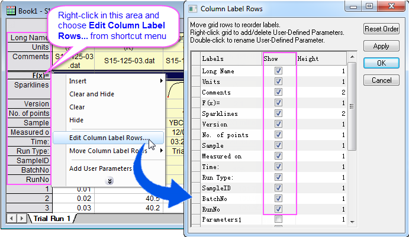
- Verwenden Sie das Kontextmenü Ansicht. Klicken Sie mit der rechten Maustaste auf (a) die Titelleiste des Fensters oder (b) den leeren Bereich neben den Arbeitsblattspalten (aber innerhalb des Arbeitsmappenfensters) und wählen Sie Ansicht im Kontextmenü (siehe Abbildung unten). Deaktivieren Sie die Auswahl für die Anzeige von Zeilenüberschriften.
- 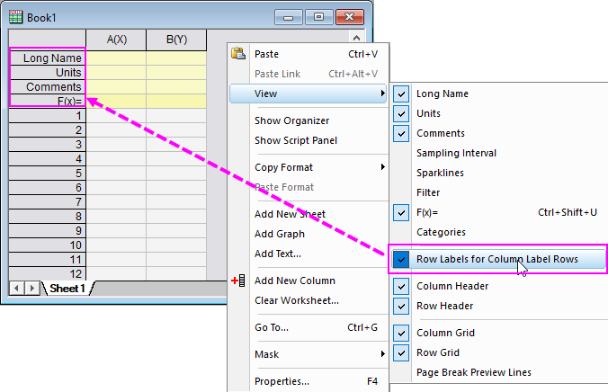
Stile festlegen
Verwenden Sie die Minisymbolleiste oder den Dialog Arbeitsblatteigenschaften, um den Stil der Spaltenbeschriftungszeilen festzulegen, oder verwenden Sie das Kontextmenü, um Stile festzulegen.
-
- Aktivieren Sie das Kontrollkästchen RTF(Rich Text), um griechische Buchstaben, LaTeX oder Sonderzeichen anzuzeigen.
- Aktivieren Sie Textumbruch, um langen Text umzubrechen.
- Wählen Sie die Schaltfläche Dialog Eigenschaften öffnen/Kontextmenü Stil setzen -> Mehr..., um zum Registerkarte Format des Dialogs Arbeitsblatteigenschaften zu gehen und weitere Anpassungen vorzunehmen, wie Text frei in die nächste Zelle zu verschieben, dynamisches Zusammenfügen etc.
Hinweis: Falls Rich Text nicht aktiviert ist, können griechische Buchstaben, Sonderzeichen und LaTeX nur als Escape-Sequenzen im Arbeitsblatt gezeigt werden, z. B. \g( ) für griechischen Text, \q( ) für LaTeX etc., obwohl sie ganz normal in Diagrammen, z. B. in Achsentiteln, Legenden usw. angezeigt werden.
Spaltenbeschriftungszeilen kopieren und einfügen
Um alle Spaltenbeschriftungszeilen zu kopieren, klicken Sie zum Kopieren mit der rechten Maustaste auf die Spaltenbeschriftungszeile (Bearbeiten: Kopieren oder Strg+C) und gehen dann zum Einfügen zum Ziel (Bearbeiten: Einfügen oder Strg+V). Einfügen-Transponieren und Link einfügen werden auch unterstützt.
Um ausgewählte Metadaten der Spaltenbeschriftungszeile mitsamt der Spaltendaten zu kopieren, klicken Sie mit der rechten Maustaste auf die Spalten und wählen Sie Kopieren (einschließlich Beschriftungszeilen). Die Auswahl von nicht nebeneinanderliegenden Bereichen und von Unterbereichen des Arbeitsblatts wird unterstützt.
- Um nur Beschriftungszeilenwerte einzufügen, klicken Sie mit der rechten Maustaste auf die Zelle in der oberen linken Ecke des Beschriftungszeilenbereichs und klicken Sie auf Einfügen (Origin fügt keine Anwenderparameterzeilen hinzu).
- Um nur Datenzeilenwerte einzufügen, klicken Sie mit der rechten Maustaste auf die Zelle in der oberen linken Ecke des Datenbereiches und klicken Sie auf Einfügen (Origin fügt nach Bedarf Datenzeilen hinzu).
- Um sowohl Beschriftungs- als auch Datenwerte einzufügen, markieren Sie die Spalte ganz links, indem Sie auf die Spaltenüberschrift klicken und Einfügen wählen. Metadaten und Daten werden in das Arbeitsblatt eingefügt. Spalten, Datenzeilen und Anwenderparameterzeilen werden ggf. hinzugefügt.
Um nur die ausgewählten Metadaten der Spaltenbeschriftungszeilen zu kopieren, klicken Sie mit der rechten Maustaste und wählen Sie Kopieren (Formel), Kopieren (Beschriftungszeilen) oder Kopieren (Formel und Beschriftungszeilen).
Bereiche mit Namen in Zelle der Beschriftungszeile definieren
Sie können eine beliebige Zelle in einer Spaltenbeschriftungszeile als einen Bereich mit Namen definieren, um diesen in Spaltenformeln oder Referenzlinien usw. zu verwenden.
- 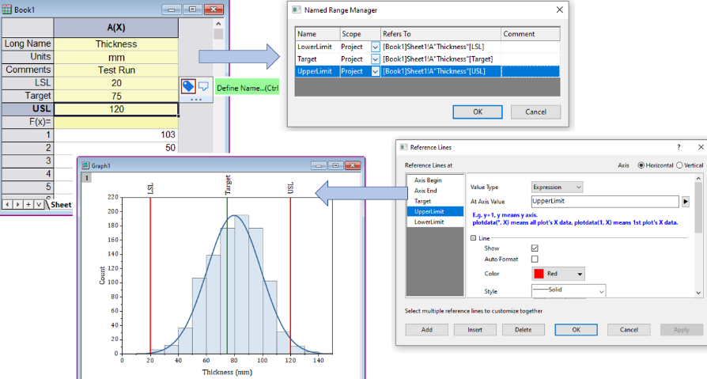
Notizen in Zellen der Beschriftungszeilen einfügen
Sie können eine Popup-Notiz in die Zelle einer Beschriftungszeile eingeben. Das Hinzufügen einer Popup-Notiz zu einer Kommentarzelle ermöglicht das Hinzufügen ausführlicher Kommentare, ohne vertikal viel Platz zu beanspruchen, damit die Kommentare voll angezeigt werden.
-
- 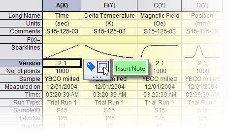
- Klicken Sie auf die Zelle der Kopfzeile.
- Klicken Sie auf die Schaltfläche Notiz einfügen der Minisymbolleiste.
- Die Notizen unterstützen Origin Rich Text und können solche Dinge wie Hyperlinks, Tabellen, LaTeX-Gleichungen und Bilder einschließen.
- Der Notizinhalt kann mit Hilfe der Schaltflächen auf der Symbolleiste Format und/oder einem anpassbaren Satz Absatzstile modifiziert werden.
- Sobald eine Zellnotiz hinzugefügt wurde, kann der Anwender die Zelle erneut auswählen, auf die Schaltfläche Im Notizfenster öffnen klicken und Elemente hinzufügen und formatieren.
-
- 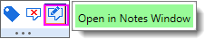
- Popupnotizen werden angezeigt, wenn der Anwender die Maus über die Registerkarte Notiz in der oberen rechten Ecke der Zelle bewegt.
- Popupnotizen sind am besten zum Anzeigen von einfachem Text geeignet. Komplexe Notizen der gemischten Elemente werden am besten direkt im Notizfenster bearbeitet und angezeigt im Gegensatz zur Popupanzeige.
- In der Spaltenlistenansicht werden auch Zellnotizen für Spaltenbeschriftungszeilen unterstützt.
- 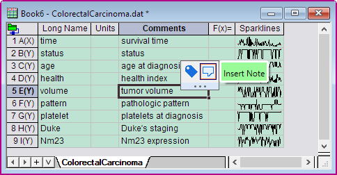
 |
Sie können den Notizinhalt zu einem Diagramm oder einer Layoutseite mit Hilfe der Syntax "@@@NotesN" hinzufügen.
|
Standardbeschriftungszeilen
Langname
Der Kurzname der Spalte wird automatisch alphabetisch benannt und ist per Standard nicht veränderbar. Wir empfehlen die Verwendung der Langnamenzeile der Spalte, um deskriptive Namen einzugeben.
Informationen zu den Langnamen von Arbeitsblattspalten finden Sie unter Benennungsregeln für Origin-Arbeitsblattspalten.
Origin kann diese Informationen für Diagrammanmerkungen verwenden. Wenn zum Beispiel Langname und Einheiten festgelegt sind, können Sie zum automatischen Beschriften der X- und Y-Achse eines 2D-Diagramms verwendet werden.
- 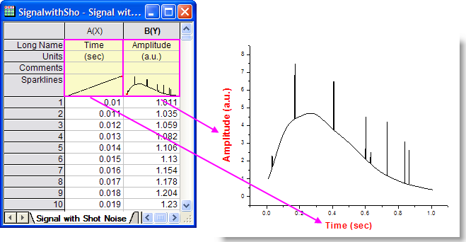
Einheiten
Die Zeile Einheiten speichert die Einheiten für die Datenspalten des Arbeitsblatts. Standardmäßig ist Rich Text für die Zeile der Einheiten aktiviert.
Eine weiterer möglicher Anwendungsbereich für Langname und Einheiten ist die Diagrammlegende.
|
Wenn die Einheiten nach dem Import an den Langnamen angehängt werden, (1) wählen Sie die Beschriftungszeile des Langnamens und (2) klicken Sie auf der angezeigten Minisymbolleiste auf die Schaltfläche Einheiten aus Langname extrahieren . Wenn Sie es vorziehen, dass die Einheiten nicht nur an den Langnamen angehängt werden, sondern auch in die Beschriftungszeile Einheiten kopiert werden, deaktivieren Sie das Kontrollkästchen Aus Quelle entfernen.
|
Kommentare
Jede Arbeitsblattspalte kann eine oder mehrere Zeilen Kommentare besitzen. Sie können mehrzeilige Kommentare verfassen, indem Sie am Ende jeder Kommentarzeile Strg + Enter drücken. Wenn Sie Dateien importieren, bei denen Sie mehrzeilige Kommentare vordefiniert haben, werden diese beibehalten und in das Feld Kommentare geschrieben.
F(x)
Die Headerzeile F(x)= zeigt an:
- Die Spaltenformel Dies ist ein mathematischer Ausdruck, der typischerweise verwendet wird, um die Spalte mit Werten zu füllen.
- Der Formeltext. Hier handelt es sich um einen alternativen Text, der direkt in die Zelle oder im Dialog Formeltext eingegeben werden kann, um ihn anstatt der Spaltenformel anzuzeigen. Wenn es beispielsweise umständlich ist eine lange Formel in der Zelle anzuzeigen, aktivieren Sie die Anzeige des Formeltexts und zeigen Sie einen aussagekräftigen Hinweis auf den Zweck der Spaltenformel an.
Die direkte Bearbeitung der Zelle kann eingeschaltet (Standard) oder ausgeschaltet werden. Zum Ausschalten der direkten Bearbeitung von F(x)=:
- Öffnen Sie Werte setzen (wählen Sie bei ausgewählter Spalte Spalte: Spaltenwerte errechnen).
- Klicken Sie im Menü auf Optionen.
- Deaktivieren Sie Formelzelle direkt bearbeiten.
Weitere Informationen zum Erstellen von Spaltenformeln finden Sie unter Werten setzen, Schnellstart und Werte setzen, Menü Optionen.
|
- Verwenden Sie die Tastenkombination Strg + Shift + U, um F(x)= zu zeigen bzw. zu verbergen. Sie können diese Zeile mit Hilfe der entsprechenden Kontextmenüs auch verbergen/zeigen. Siehe dazu diesen Abschnitt.
- Der Standardmodus der Neuberechnung von F(x)= ist Auto. Er lässt sich mit der Systemvariable @AUFL ändern.
|
Den Ausdruck in F(x)= erstellen
Ausdrücke werden in die Zelle F(x)= auf einem von drei Wegen eingegeben:
- Klicken Sie doppelt auf die Zelle und geben Sie einen Ausdruck direkt in die Zelle ein (angenommen die direkte Bearbeitung ist nicht deaktiviert, wie im vorherigen Abschnitt erläutert).
- Geben Sie einen Ausdruck in das obere Feld des Dialogs Werte setzen ein.
- Geben Sie einen Ausdruck mit Hilfe eines Kontextmenübefehls ein (siehe nächster Abschnitt).
|
Sie können die automatische Vervollständigung für Spalten und/oder Zellenformeln/F(x)= deaktivieren:
- Wählen Sie Einstellungen: Systemvariablen.
- Geben Sie in eine leere Variablenzelle FAC ein.
- Geben Sie eine der folgenden Zahlen in die Zelle Wert ein (Werte sind zusätzlich): 0 = automatische Vervollständigung ausschalten, 1 = für Zellenformel und die Beschriftungszeile F(x)= aktivieren, 2 = für Spaltenformel aktivieren, 3 (Standard) = für Zellenformel/F(x)= und Spaltenformel aktivieren.
- Klicken Sie auf OK, um den Dialog zu schließen.
|
|
Um die Formel, die den Spaltenkurzname enthält, mit Shift automatisch zu füllen, drücken Sie die Strg-Taste, während Sie an der unteren rechten Ecke der Formelzelle ziehen.
Weitere Informationen zu Methoden der automatischen Füllung finden Sie in dieser FAQ.
|
F(x)= Kontextmenübefehle
Angenommen, die direkte Bearbeitung ist aktiviert. Dann können Sie mit der rechten Maustaste auf die Zelle F(x) klicken und Informationen mit Hilfe eine der folgenden Optionen in die Zelle eingeben:
|
Sie können Formeln auch direkt in der Spaltenbeschriftungszeile F(x)= Zelle laden, indem Sie die Zelle auswählen und im Hauptmenü Spalte: Mit Anwenderformel füllen.
|
F(x)= Kontextmenübefehle für Python-Funktionsaufrufe
Wenn die Spaltenformel eine Python-Funktion aufruft, wird ein zusätzlicher Menübefehl Python-Datei öffnen gezeigt, wenn:
- Die Zellenformel F(x)= mit py. beginnt.
- Die Python-Funktion ist in einer externen Datei gespeichert. Diese Datei wird per Standard labtalk.py genannt und in Ihrem Anwenderdateiordner gespeichert. Siehe Dokumentation zum Python-Objekt von LabTalk für Informationen zum aktuellen Arbeitsverzeichnis und zu aktuellen Arbeitsdatei).
| Python-Datei öffnen |
Öffnen Sie die Python-Funktion in der Code Builder IDE (Entwicklungsumgebung).
|
|
Durch das Auswählen einer Zelle F(x)=, die die obigen Kriterien erfüllt, wird der Pfad des aktuellen Arbeitsverzeichnisses und der aktuellen Arbeitsdatei in der Statusleiste angezeigt.
-
|
Kategorien
Die Spaltenbeschriftungszeile Kategorien zeigt an, wenn Sie der Arbeitsblattspalte kategoriale Daten zugewiesen haben (Spalte markieren, mit der rechten Maustaste klicken und Als kategorisch setzen auswählen). Der Zelleninhalt zeigt, (a) ob Daten sortiert oder unsortiert sind (<Auto> ist ausgewählt) oder (b) eine mit Leerzeichen getrennte Liste der Kategorien:
- Wenn Sie doppelt auf diese Zelle klicken, öffnen Sie den Dialog Kategorien (wie im Dialog Spalteneigenschaften, Kategorien) mit Bedienelementen zur Anzeige von kategorialen Daten in dieser Spalte.
- Wenn Sie mit der rechten Maustaste auf diese Zelle klicken, öffnen Sie ein Kontextmenü "Kategorisch", das einige der wichtigsten Bedienelemente für Kategorien dupliziert.
- 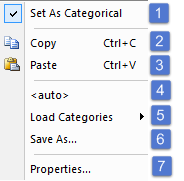
-
- Spalte als kategorisch setzen oder deaktivieren
- Kategorien kopieren (einschließlich das Festlegen der Spalte als kategorisch)
- Kategorien einfügen (einschließlich das Festlegen der Spalte als kategorisch)
- Als <Auto> setzen (zeigt Sortierungsinformationen an, erzeugt dynamisch Kategorien von der Liste) oder mit Leerzeichen getrennte Kategorien anzeigen (nicht dynamisch aktualisiert)
- Zuvor gespeicherte Kategorien laden (Standardpfad ist \Anwenderdateien\Kategorien\)
- Katgorien in Datei speichern
- Wählen Sie Eigenschaften, um den Dialog Kategorien zu öffnen.
Informationen zum Erstellen und benutzerdefinierten Anpassen von Diagrammlegenden für Zeichnungen von kategorialen Daten finden Sie unter Legenden für kategoriale Daten.
Abtastintervall
Bei dem Versuch, die Dateigröße zu verringern, können einige Dateien -- insbesondere solche, die aus Daten bestehen, die in regelmäßigen Abständen gesammelt wurden -- die unabhängige Variable (X-Spalte) ausschließen. In diesem Fall zeigt die Zeile Abtastintervall das Abtastintervall (X). Um eine kurze Demonstration der Funktionsweise zu sehen, ziehen Sie eine .WAV-Datei in den Origin-Arbeitsbereich.
- 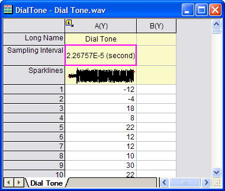
Sparklines
Sparklines können eine schnelle Übersicht der Trends in einer Reihe von verwandten Datensätzen in den Y-Spalten eines Arbeitsblatts bieten.
Um Sparklines im Arbeitsblatt zu zeigen:
- Wählen Sie im Hauptmenü Spalte: Sparklines hinzufügen oder aktualisieren.
- Konfigurieren Sie in dem aufgerufenen kleinen Dialog Ihre Sparklines.
- Klicken Sie auf OK, um sie zur Beschriftungszeile Sparklines hinzuzufügen.
Beachten Sie, dass jede Sparkline ein bearbeitbares eingebettetes Diagramm ist, das durch einen Doppelklick auf das Sparklineobjekt (siehe Abbildung unten) oberhalb jeder Spalte mit Arbeitsblattspalten geöffnet werden kann. Ergänzungen zum Diagramm werden im eingebetteten Objekt gespeichert -- jedoch nicht notwendigerweise angezeigt. Durch das Bewegen der Maus über eine Sparkline wird eine vergrößerte Ansicht der Sparkline gezeigt.
-
- 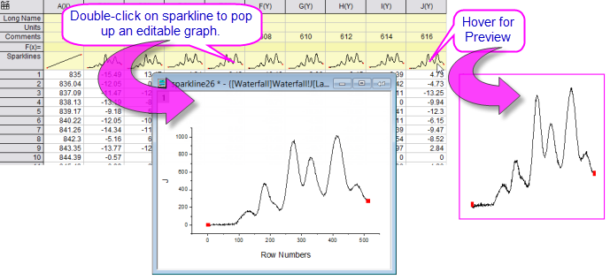
 |
Sparklines können, in großer Anzahl, verusachen, dass Origin langsam wird. Sollte die Arbeit mit Ihrem Projekt schwierig sein und Sie vermuten, dass die Sparklines daran mit Schuld sind, können Sie das Erstellen von Sparklinen verhindern und die vorhandenen Sparklines im Projekt mit Hilfe der Systemvariable @SPK verbergen. Zusätzlich können Sie Sparklines aus dem aktuellen Projekt mit Hilfe von delete -spk löschen.
|
Filter
Diese Zeile wird nur gezeigt, wenn ein Filter zu einer der Spalten im Arbeitsblatt hinzugefügt wird. Sie zeigt die Filterbedingung an.
Parameter
Die integrierten Parameterzeilen sind standardmäßig deaktiviert, können aber eingeblendet werden, um zusätzliche Informationen wie Temperatur, Druck, Feuchtigkeit, Wellenlänge etc. anzuzeigen, aber da diese Standardparameter nicht umbenannt werden können, finden die meisten Anwender die benutzerdefinierten Parameter nützlicher.
Ein Beispiel, wie die Parameterinformationen in einem Origin-Diagramm verwendet werden können, finden Sie unter Anpassen von Wasserfall-Diagrammen.
- Klicken Sie mit der rechten Maustaste auf die Spaltenbeschriftungszeile und wählen Sie Spaltenbeschriftungszeilen bearbeiten im Kontextmenü. Der Dialog Spaltenbeschriftungszeilen wird geöffnet.
- Aktivieren Sie das Kontrollkästchen Zeigen für die Beschriftung Parameter# und klicken Sie auf OK, um die Parameter als eine Spaltenbeschriftungszeile in das Arbeitsblatt einzufügen.
- Klicken Sie doppelt auf die Überschrift der Parameterzeile, die Sie gerade hinzugefügt haben, um den Dialog In Anwenderparameter verschieben zu öffnen, den Parameternamen zu ändern und ihn einen Anwenderparameter zu setzen.
Benutzerdefinierte Parameter
Sie können jede Anzahl von benutzerdefinierten Parameterzeilen hinzufügen und ihnen einen beliebigen Namen zuweisen.
-
- Klicken Sie auf den Kopf einer Beschriftungszeile und klicken Sie auf die Schaltfläche P auf der Minisymbolleiste.
- Klicken Sie mit der rechten Maustaste auf den Kopf einer Beschriftungszeile und wählen Sie Anwenderparameter hinzufügen ..., um ihn nach der ausgewählten Zeile hinzuzufügen.
- Klicken Sie mit der rechten Maustaste auf den Kopf einer Beschriftungszeile und wählen Sie Einfügen: Anwenderparameter, um ihn vor der ausgewählten Zeile einzufügen.
- Klicken Sie mit der rechten Maustaste auf den Header der Beschriftungszeile und wählen Sie Spaltenbeschriftungszeilen bearbeiten, um der Dialog Spaltenbeschriftungszeilen zu öffnen. Klicken Sie mit der rechten Maustaste in den Dialog, um hinzuzufügen und klicken Sie doppelt zum Neubenennen. Ziehen Sie an der leeren Gitternetzzelle links, um die Reihenfolge zu ändern.
-
- 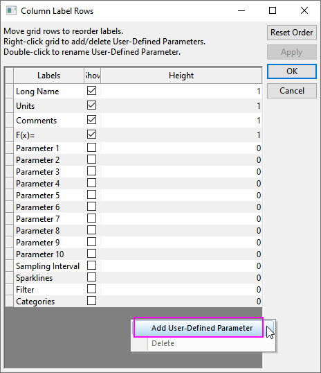
- 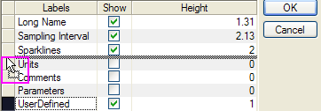
-
- Aktivieren Sie das Arbeitsblatt und wählen Sie Format: Arbeitsblatt im Menü. Klicken Sie auf der Registerkarte Ansicht auf die Schaltfläche Spaltenbeschriftungszeilen bearbeiten.
Beachten Sie, dass benutzerdefinierte Parameterzeilen auch beim Datenimport erstellt werden können, vorausgesetzt Ihre Datendateien enthalten Metadaten im Header und Sie haben vordefinierte Parameter mit Hilfe des Importassistenten von Origin.
- Um den Inhalt einer Standardbeschriftungszeile (z. B. Kommentare) in eine benutzerdefinierte Parameterzeile zu verschieben, klicken Sie doppelt auf die Standardüberschrift der Zeile; oder klicken Sie mit der rechte Maustaste und wählen Sie Als Anwenderparameter festlegen. Diese Aktionen öffnen das Feld In Anwenderparameter verschieben, in das Sie den Namen Ihres benutzerdefinierten Parameters eingeben und den Zeileninhalt in die benutzerdefinierte Parameterzeile verschieben können.
- Um einen benutzerdefinierten Parameter umzubenennen, klicken Sie doppelt auf die Überschrift der Parameterzeile und geben Sie einen Namen in das Feld Name des geöffneten Dialogs Bearbeiten ein. In diesem Dialog können Sie eine Formel für den Anwenderparameter aktivieren und eingeben, um einige Spaltenstatistikwerte wie Mittelwert oder Standardabweichung zu berechnen.
Daten der Anwenderparameter formatieren
Alle Beschriftungszeilendaten in Arbeitsblattspalten werden als Zeichenketten gespeichert, auch Daten, die numerisch angezeigt werden. Anwenderparameterzeilen unterstützen die Formatierung der Daten, die numerisch zu sein erscheinen (z. B. ein Julianischer Tageswert wie "2458395"). Andere Standard-Spaltenbeschriftungszeilen können nicht so formatiert werden.
-
- Klicken Sie auf eine benutzerdefinierte Parameterzeile und klicken Sie auf die Schaltfläche Dialog Eigenschaften öffnen ... auf der Minisymbolleiste.
- Klicken Sie mit der rechten Maustaste auf eine Zeilenüberschrift und wählen Sie # im Kontextmenü. Wählen Sie dann Benutzerdefinierten Stil festlegen: Mehr.
Beides öffnet den Dialog Zellen formatieren, um Format und Anzeige festzulegen.
- 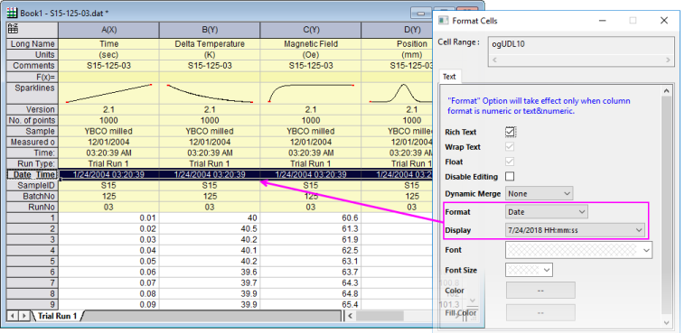
- Beim Formatieren der Daten der Spaltenbeschriftungszeile als Text & Numerisch, Datum oder Zeit haben Sie nicht die gleiche Optionen für die Benutzerdefinierte Anzeige zur Verfügung wie z. B. im Dialog Spalteneigenschaften. Sie müssen eine der vorhandenen Optionen aus der Auswahlliste Anzeige im Dialog Zellen formatieren wählen.
- Sie können die Formatierung auf Datums- und Zeitdaten nur anwenden, wenn die in der benutzerdefinierten Parameterzeile gespeicherte Zeichenkette numerische ist (d. h. ein Julianischer Tageswert wie intern von Origin verwendet). Das Formatieren dieser numerischen Zeichenketten ermöglicht Ihnen, diese Werte der Spaltenbeschriftungszeilen für Berechnungen wie in einer Arbeitsblattzellenformel (z. B. =value(wcol(j)[D1]$)) zu verwenden.
- Anwender sollten immer daran denken, dass Daten in Spaltenbeschriftungszeilen noch immer Zeichenketten sind -- keine numerischen Daten, unabhängig davon welche Formatierungsoptionen angewendet werden.
Eine Formel beim Hinzufügen von Anwenderparametern definieren
Sie können eine Anwenderparameterzeile zum Arbeitsblatt hinzufügen, ausdrücklich zum Berechnen einiger Spaltenstatistikwerte wie Mittelwert oder Standardabweichung.
- Klicken Sie mit der rechten Maustaste auf die Überschriften der Spaltenbeschriftungszeilen und wählen Sie Benutzerparameter hinzufügen im Kontextmenü.
- Geben Sie im Dialog Anwenderparameter hinzufügen einen Namen für Ihre benutzerdefinierte Zeile ein und klicken Sie dann auf das Ausklappmenü, um aus einer Liste allgemeiner Statistikwerte zu wählen. Der Statistikwert wird für jeden Arbeitsblattspalte, die Daten enthält, berechnet.
- 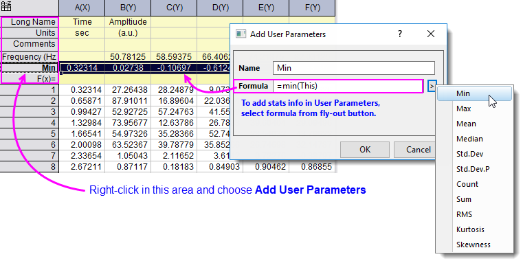
- Um Änderungen an den Anwenderparameterzeilen Name oder Formel vorzunehmen, klicken Sie mit der rechten Maustaste auf die Überschrift der Anwenderparameterzeile und wählen Sie Bearbeiten im Kontextmenü.
|
Das obige Verfahren erweitert Ihre Formel automatisch über alle Arbeitsblattspalten. Sie können eine Beschriftungszeilenformel jedoch auch auf alle Zellen rechts von der Zelle, die die Formel enthält, erweitern, indem Sie mit dem Maus über die Ecke rechts unten der Formelzelle fahren und doppelt auf das Symbol "+" klicken.
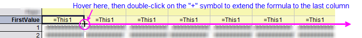
|
- Wählen Sie die Anwenderparameterzeile aus, die Sie kopieren möchten.
- Klicken Sie in der aufgerufenen Minisymbolleiste auf die Schaltfläche Anwenderparameter anwenden auf
 . Wählen Sie im Ausklappmenü die Zielarbeitsblätter aus:
. Wählen Sie im Ausklappmenü die Zielarbeitsblätter aus:
-
- Blätter in der aktuellen Mappe: Alle Blätter in der aktuellen Arbeitsmappe. Verborgene Blätter sind eingeschlossen, eingebettete Seiten dagegen nicht.
- Blätter im aktuellen Ordner: Alle Blätter im aktuellen Ordner. Blätter in Unterordnern werden nicht eingeschlossen. Verborgene Blätter sind eingeschlossen, eingebettete Seiten dagegen nicht.
- Blätter im aktuellen Ordner (Öffnen): Alle geöffneten (nicht verborgenen) Blätter im aktuellen Ordner. Blätter in Unterordnern werden nicht eingeschlossen.
- Blätter im aktuellen Ordner (Rekursiv): Alle Blätter im aktuellen Ordner. Die Unterordner werden rekursiv mit exportiert.
- Blätter im Projekt: Alle Blätter im Projekt. Verborgene Blätter sind eingeschlossen, eingebettete Seiten dagegen nicht.
- 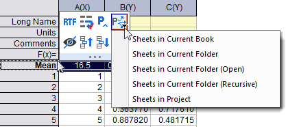
Erläuterung der Kontextmenüs für Spaltenbeschriftungszeilen
Im Folgenden wird jedes Kontextmenü der Spaltenbeschriftungszeilen erläutert.
Anwenderparameter einfügen
Wählen Sie Einfügen: Anwenderparameter im Kontextmenü, um einen Anwenderparameter oberhalb der aktuellen Spaltenbeschriftungszeile einzufügen.
Spaltenbeschriftungszeilen verbergen/zeigen
Um eine oder mehr Zeilen zu verbergen, können Sie mit der rechten Maustaste auf die Spaltenbeschriftungszeile klicken und Verbergen oder Löschen und Verbergen im Kontextmenü auswählen. Wenn Sie Löschen und Verbergen auswählen, werden die Informationen in der aktuellen Beschriftungszeile gelöscht und die gesamte Zeile wird verborgen.
- 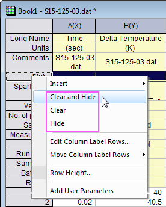
Um die verborgenen Spaltenbeschriftungszeilen zu zeigen, können Sie die Auswahl im Kontextmenü Ansicht treffen oder zum Dialog Spaltenbeschriftungszeilen gehen. Bitte sehen Sie weitere Einzelheiten auf dieser Seite.
Zeilenbeschriftung umbenennen
Die angezeigten Standardzeilen der Spaltenbeschriftungen, Langname, Einheiten, Kommentare und F(x)= können nicht umbenannt werden, genauso die Zeile Parameter. Klicken Sie doppelt auf ihre Zeilenüberschrift (Rechtsklick auf die Überschrift, um im Kontextmenü Bearbeiten auszuwählen). Der Dialog In Anwenderparameter verschieben wird aufgerufen, in dem Sie die Zeilenbeschriftung umbenennen können, sie aber in einen Anwenderparameter konvertieren.
- Klicken Sie doppelt auf die Zeilenüberschrift, um den Dialog Bearbeiten zu öffnen.
- Geben Sie einen neuen Namen im Feld Name ein, aktivieren und geben Sie ggf. eine Formel im Feld Formel.
- Klicken Sie auf OK, um den Dialog zu schließen.
Spaltenbeschriftungszeilen bearbeiten
Klicken Sie mit der rechten Maustaste auf die Spaltenbeschriftungszeile und wählen Sie Spaltenbeschriftungszeilen bearbeiten im Kontextmenü. Der Dialog Spaltenbeschriftungszeilen wird geöffnet. In diesem Dialog können Sie Spaltenbeschriftungen ein- oder ausblenden, Beschriftungszeilen neu anordnen, einen benutzerdefinierten Parameter hinzufügen und die Höhe für jede Beschriftungszeile festlegen.
Spaltenbeschriftungszeilen verschieben
- Klicken Sie mit der rechten Maustaste auf die Spaltenbeschriftungszeile, wählen Sie Spaltenbeschriftungszeilen verschieben und dann Nach oben verschieben/Nach unten verschieben/Aufwärts/Abwärts im Kontextmenü.
Oder
- Klicken Sie auf die Spaltenbeschriftungszeile und dann auf
 oder
oder  in der Minisymbolleiste.
in der Minisymbolleiste.
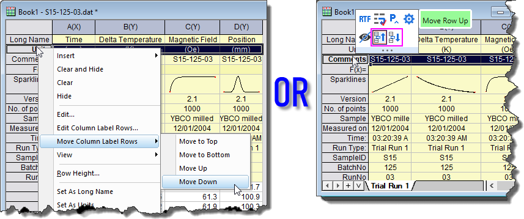
Weitere Zeilen als Beschriftungszeilen festlegen
Um eine oder mehrere Zeilen (Spaltenbeschriftungs- oder Datenzeilen) als eine der drei standardmäßigen Spaltenkopfzeilen (Langname, Kurzname und Einheiten) oder benutzerdefinierte Parameter festzulegen, klicken Sie mit der rechten Maustaste und wählen Sie Als Langname/Einheiten/Kommentar/Parameter/Benutzerparameters setzen im Kontextmenü.
Zeilen an Beschriftungszeilen anhängen
- Klicken Sie mit der rechten Maustaste auf eine oder mehrere Zeilen (Spaltenbeschriftungs- oder Datenzeilen) und wählen Sie An Kommentar/Langname anhängen aus dem Kontextmenü.
- 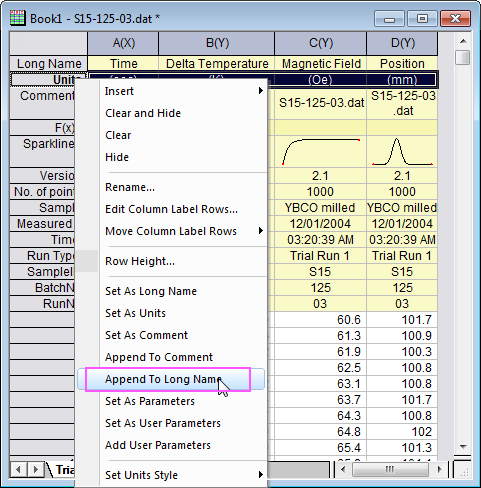
Als Kategorisch setzen
- Klicken Sie mit der rechten Maustaste auf eine Spaltenbeschriftungszeile und wählen Sie Als Kategorisch setzen im Kontextmenü.
Oder wählen Sie eine Spaltenbeschriftungszeile und klicken Sie auf die Schaltfläche Kategorial auf der angezeigten Minisymbolleiste.
Dadurch enthält die ausgewählte Beschriftungszeile kategoriale Daten.
- Verfügbare Beschriftungszeilen schließen Langname, Einheiten, Kommentare, Parameter und Benutzerdefinierte Parameter ein.
- Wenn eine Spaltenbeschriftungszeile als kategorisch gesetzt wird, können Sie mit der rechten Maustaste darauf klicken und im Kontextmenü Kategorien auswählen. Der Dialog Kategorien wird geöffnet, indem Sie Kategorien benutzerdefiniert anpassen können.
- Diese Funktion ist nützlich, wenn Sie Spalten in mehrere Zeichnungsgruppen oder Layer zeichnen möchten, und bei Spalten mit der gleichen Beschriftungszeile, wenn Sie die gleichen Zeichnungseigenschaften (Farbe, Symbolform, Größe etc.) zwischen verschiedenen Gruppen/Layern teilen möchten. In diesem Fall können Sie diese Spaltenbeschriftungszeile als kategorisch setzen und die Zeichnungsfarbe/-form/-größe ... auf diese Beschriftungszeile abbilden.
- 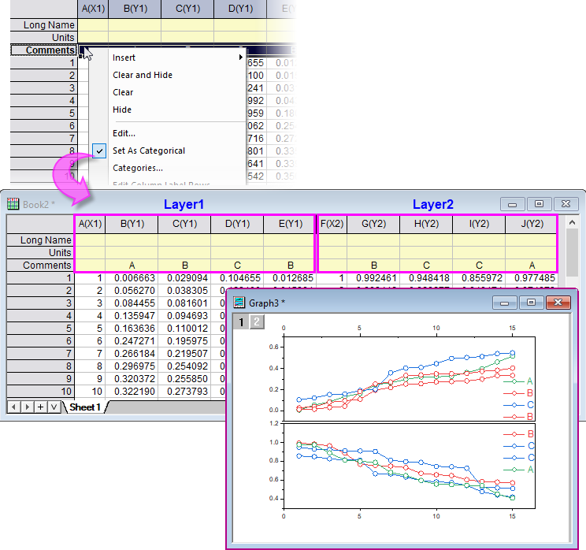